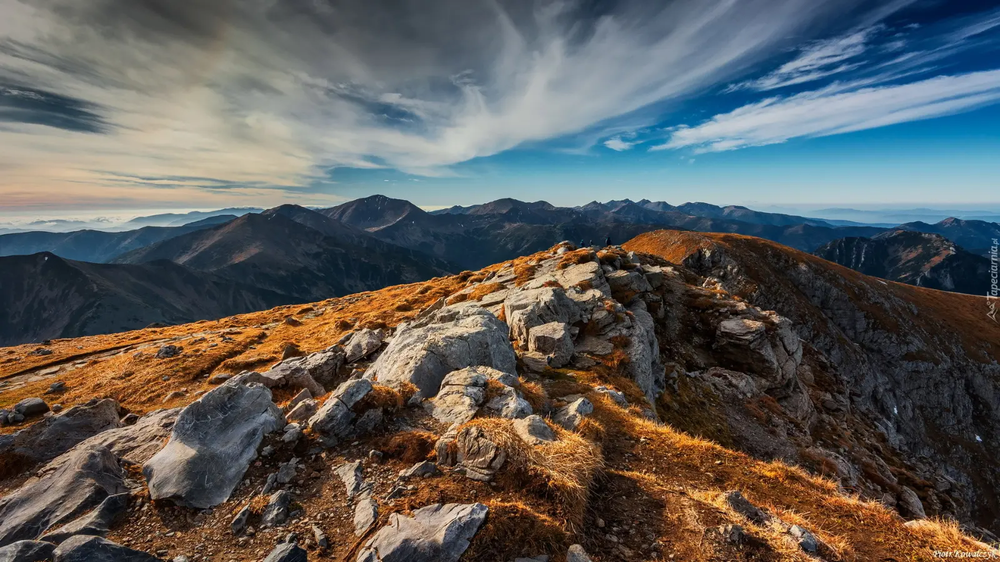

A stronghold on a rock above Czorsztyn, with views of the Pieniny and the Tatras. Perfect for a weekend stop en route. Slow travel through Dunajec Castle in Niedzica.
Why Niedzica, differently
Dunajec Castle in Niedzica is one of the most picturesquely situated fortresses in Poland. It rises on a limestone rock above Lake Czorsztyn, towering over the Dunajec valley and offering views of the Pieniny, the Tatras, and the Beskid Sądecki. The castle's history is colourful and full of mysteries — from knightly origins, through Hungarian influences, to the legend of the Inca treasure.
Slow travel through Niedzica is a journey through layers of history. Touring the chambers and chapel lets you feel the atmosphere of old times, when the castle guarded the border between Poland and Hungary. From the castle terraces one of the most beautiful views in the region opens up — over Lake Czorsztyn, the Pieniny, the Tatras. This is a land that rewards those who slow down — the longer you are here, the more details you notice: traces of former inhabitants, influences of different cultures, panoramas that change with every time of day.
What to see
The castle in Niedzica is not just the castle itself — it is a whole complex of attractions: chambers, chapel, terraces, courtyard, exhibitions. Half a day is enough to see it, but it is worth devoting a full day with a cruise on the reservoir.
Castle and chambers
- Dunajec Castle in Niedzica — a Gothic stronghold from the 14th century, expanded in the 16th and 17th centuries. A guided tour takes ~1.5 hours. Worth it for architecture and history.
- Castle chambers — the castle's ceremonial halls, where guests were received. Interiors delight with original furnishings, furniture and paintings. Worth it for interiors.
- Castle chapel — a Gothic chapel from the 15th century, with rich decoration. Worth it for architecture.
- Terraces and courtyard — castle terraces with a panorama over the reservoir, the Pieniny and the Tatras. Worth it for views.
- Knight's Hall — the castle's ceremonial hall, where feasts and receptions were held. Worth it for architecture.
Exhibitions and museum
- Castle Museum — an exhibition about the history of the castle and region. Worth it for understanding the historical context.
- Inca Treasure exhibition — the legend of the Inca treasure, hidden in the castle by descendants of the Incas. Worth it for history and legend.
- Ethnographic exhibition — an exhibition about the highlander culture of the region. Worth it for understanding the cultural context.
- Exhibition about Spisz and Orava — an exhibition about the history of the Spisz and Orava regions. Worth it for history enthusiasts.
Lake Czorsztyn and surroundings
- Lake Czorsztyn — an artificial reservoir on the Dunajec, with dams in Niedzica and Czorsztyn. Worth it for views and cruises.
- Cruise on Lake Czorsztyn — the boat sails along the castles in Niedzica and Czorsztyn, offering a perspective from which you can see the whole area. Worth it for panoramas.
- Czorsztyn Castle — ruins of a castle across the reservoir, with a view over Niedzica. Worth it for architecture and views.
- Dam in Niedzica — a water dam on the Dunajec, with a viewpoint. Worth it for views over the reservoir.
Pieniny and surroundings
- Pieniny — a mountain range east of the reservoir, with Trzy Korony and Sokolica. Worth it for walks and views.
- Czorsztyn — a village with castle ruins, across the reservoir. Worth it for history and views.
- Szczawnica — a spa at the foot of the Pieniny, ~20 km from Niedzica. Worth it for walks and mineral water pump rooms.
- Dębno — a village with the Gothic Church of St. Michael the Archangel (UNESCO), ~5 km from Niedzica. Worth it for architecture.
- Frydman — a village with a castle and wooden church, ~15 km from Niedzica. Worth it for architecture.
When to go
- May and June — the best time. Fewer tourists, long days, stable weather. Worth a walk on the terraces.
- September and October — second best. Autumn colours in the Pieniny, clear air, fewer people.
- July and August — peak season. Castle crowded, car parks full. If you must — pick a weekday and come in the morning.
- November–March — the castle in winter is less crowded, but terraces may be closed. Worth it for those who want to see the castle without crowds.
Getting there
- By car: ~2 hours from Kraków (via Nowy Targ), ~45 minutes from Zakopane, ~3 hours from Rzeszów. Car park at the castle (paid, in season full from 9 a.m.).
- By train: station in Nowy Targ (~40 km from Niedzica), with connections from Kraków (~2.5 hours). Then bus or taxi.
- By bus: PKS and private operators from Kraków and Zakopane to Niedzica.
Within Niedzica you can walk. To the castle leads a road from the village centre. A car is useful to explore the surroundings (Pieniny, Czorsztyn, Szczawnica).
How much time you need
Half a day (3–4 hours) is the minimum for a visit to the castle and a walk on the terraces.
A full day lets you add a cruise on the reservoir, a walk on the dam and a visit to Czorsztyn.
A weekend (2 days) lets you combine Niedzica with the Pieniny, Szczawnica and Dębno.
What to eat and where to sleep
- Podhale cuisine — oscypek, kwaśnica, moskole. Worth trying in local taverns.
- Grilled trout — from local farms in the Dunajec.
- Duck with apples — a regional classic, available in elegant restaurants.
- Beer from a local brewery — several craft breweries in the region.
- Coffee and cake — Niedzica and Szczawnica have several good cafés.
- Sheep cheeses — oscypek, bryndza, bundz, available at shepherd huts.
Accommodation: Niedzica (closest to the castle, smaller choice), Czorsztyn (village with a castle, close by), Szczawnica (spa, more options), Krościenko (close to the Pieniny), Bukowina Tatrzańska (~30 km, more options). Book ahead in summer season.
Practical tips
- Bookings — tickets for the castle are worth booking in advance, especially in season. Guided tours have a limited number of places.
- Cruise on the reservoir — book the boat cruise for the early afternoon. That is when the light is most beautiful and crowds are smaller than in the morning.
- Guided tours — the castle's history is complex, and without context many chambers look similar. Worth going with a guide.
- Terraces — castle terraces are open all year, but in winter they can be icy. Wear comfortable shoes.
- Crowds — the castle is crowded in season (May–September). Come in the morning.
- Parking — the car park at the castle is paid. In season it fills from 9 a.m.
- Signal — good throughout Niedzica and the area.